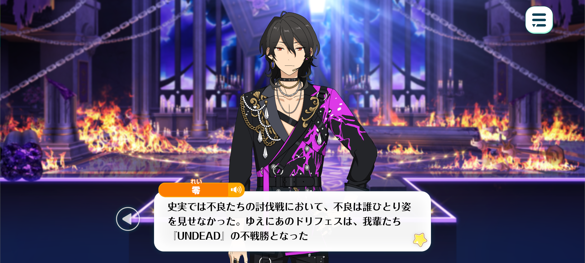
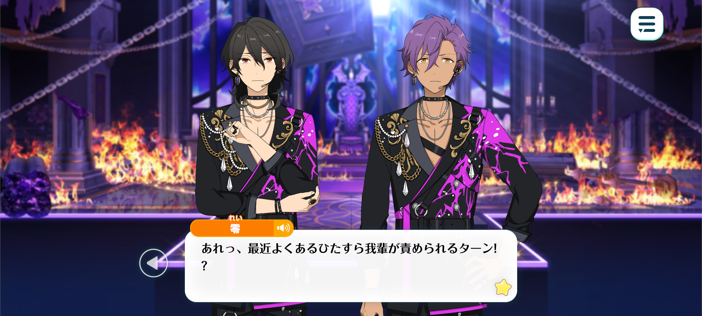
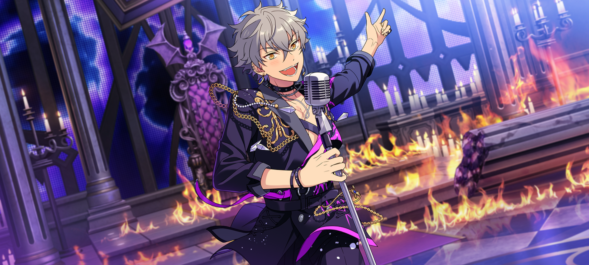
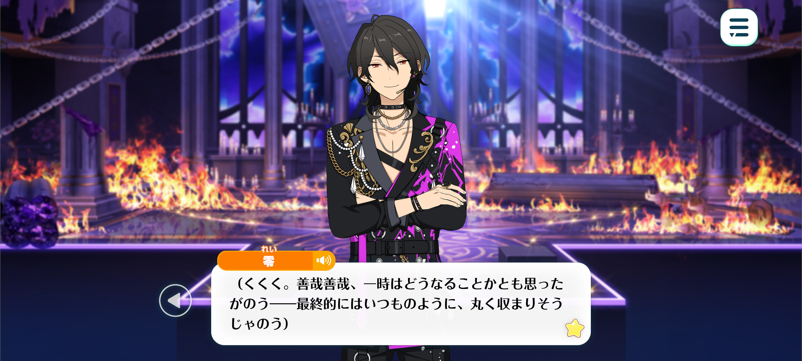
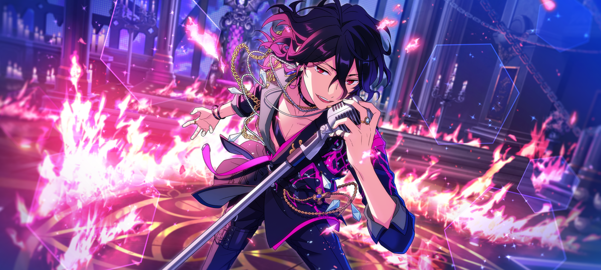

PSYCHOBREAK — Chapter 17



Rei: As it happened, not a single one of the delinquents showed up for the showdown. And so, UNDEAD won the DreFes by default.
That was how things were supposed to unfold. However, in the dream, I noticed one delinquent who hadn't been there originally.
That was our culprit. Within the dream, he could only exist when he was close to our physical bodies.
In other words, if he wanted to rewrite history, he would have to remain somewhere nearby.
He must have sensed that we were trying to return to the past and change something, and grown anxious enough to come and check on us. That's when I spotted him, identified him as the culprit, and gave chase.
And that, you see, is why I didn't immediately take to the stage. I was in the audience searching for the culprit! It wasn't because I couldn't be bothered, honest! Really!
Koga: But you didn't get onstage even in the real past!
Kaoru: Right!? How could you miss a once-in-a-lifetime opportunity like your own debut performance? And you had the nerve to lecture me, when I was the one who used to skive off all the time!

Adonis: I agree. I thought it was rather unfair of you, too. I was so anxious and frightened back then that I even found myself resenting you for not showing up, Sakuma-senpai.
Rei: Eh!? Why have you all suddenly started blaming me for everything!?
A-anyway! Once I'd identified the culprit, the rest was quite simple. All I had to do was return to the present, track him down, and apprehend him.
Once we had done that, he lost control of HELLSING, and the machines stopped functioning. Which brings us to our current predicament.
Adonis: So the culprit has been dealt with, and the situation has been resolved...?
Koga: That’s great ‘n all, but what about now? What about the situation we're in right this second?
We're in the middle of a live here! Sure, that bastard pisses me off, and we had to put a stop to his scheme, but... we can't just let HELLSING shut down now!
Fans have travelled all the way here from across the country to see us perform!
We can’t stop jus’ ‘cos somethin’ came up!
Rei: Kukuku. You're surprisingly perceptive at times, Koga-kun. And yet, on other occasions, you can be astonishingly dense and foolish.
Koga: Haah!?
Rei: Look at them.
Koga: You mean HELLSING?
Rei: Umu. We shall simply take HELLSING's place. Though I suppose that makes us stand-ins for our own stand-ins... Goodness, I'm beginning to confuse myself.
The general public has no idea that these fakes even exist. As far as they're concerned, HELLSING is simply an offshoot of UNDEAD.
So let us make that perception a reality. The four of us, myself, Kaoru-kun, Koga, and Adonis-kun, can simply take on the role of HELLSING.
Koga: ...I guess we've got no choice, but can we actually pull it off? Y'know, considering you two wimpy senpais are always busy doing those variety shows?
Kaoru: Ohh, don't be silly. Variety shows are hard work, you know? They might not have a direct impact on what we do onstage, but they certainly help us improve.
Besides, there's already a difference in ability between the two main attractions of UNDEAD and you two. I suppose all those variety shows have only made the gap even wider, haven't they?
Try not to hold us back, 'kay? ♪
Koga: HAAH!? Bring it on, playboy! Unlike you, you lazy bastard, I practise so hard every single day it could kill me!

Just you wait! I'll have you beggin’ for mercy, screaming, 'Noooo~! I'll never be able to beat Koga-sama and Adonis-sama!'
Rock’n’roll…!
“♪～♪～♪”
Rei: Kukuku. You’re rather good at lighting a fire beneath Koga, Kaoru-kun.
Kaoru: I was only copying you～？
Adonis: Fufu. It makes me happy. We're finally starting to feel like ourselves again.
As long as we have each other, we'll be all right, no matter what happens.
I truly believe that. I can put my trust in all of you and leave things in your hands.
I'll devote my whole heart and soul to serving you through song and dance. That's what I can do, and it's what brings me joy.
I won't let those vampires, I won’t let anyone else, take my rightful place away from me!
“♪～♪～♪”
Kaoru: Whoa, it's not often you see Adonis-kun getting this fired up! ♪
Rei: He's always been a passionate fellow, really. He simply doesn't show it very often.
Now then. We can't let our kohai outshine us, can we? Let us give it our all, too.
Kaoru: Yupyup. Just don't put your back out, old man! ♪
I'm pretty annoyed with the culprit myself, so this'll be a great way to blow off some steam. I'll give it everything I've got!
I want him to understand that there's no replacing any of us.
So today, I’ll show you just how serious I can be.
“♪～♪～♪”

Rei: (Kukuku. Bravo, bravo. I was a little worried about how things would turn out, but in the end, everything was resolved quite amicably. Just as it always is.)
(All is well in the world. A happy, auspicious ending.)
(Ah, how dazzling... The stage has always been like this. It is filled with such brilliant radiance that it could reduce me to ashes.)
(I have no right to laugh at the culprit. I, too, once turned my gaze away from that light and turned my back on the stage.)

(But I have no intention of doing so ever again.)
(I shall bask in its brilliance. Even if it burns me to ashes, this is the ambition I have cherished for so long.)
(So, what do you think? Are you watching, you foolish, pathetic criminal?)
(And you, too, Sakuma Rei-kun, the miserable adolescent boy you once were, who couldn't find hope in anything...)
(―Aren’t you jealous of me ♪)
“♪～♪～♪”
“Tonight, we feast! We shall make this new frontier known as HELLSING our own, and devour your very souls along with it! And we, UNDEAD, shall grow stronger still!”
“We are UNDEAD!”
“No matter how many formidable foes stand in our way, no matter how fiercely the fires of hell may consume us, UNDEAD shall rise from the ashes time and time again! We shall be resurrected!”
“Until my dying breath - nay, even beyond! We shall burn brightly for all eternity, even if we are consumed by the fires of hell! Join us, and let this joyous feast begin!”
“So long as that is what you desire, this radical, immoral, sweet night shall never end!”
“♪～♪～♪”